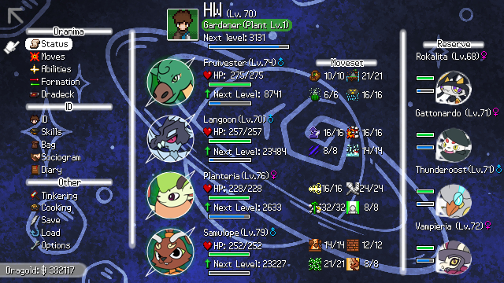
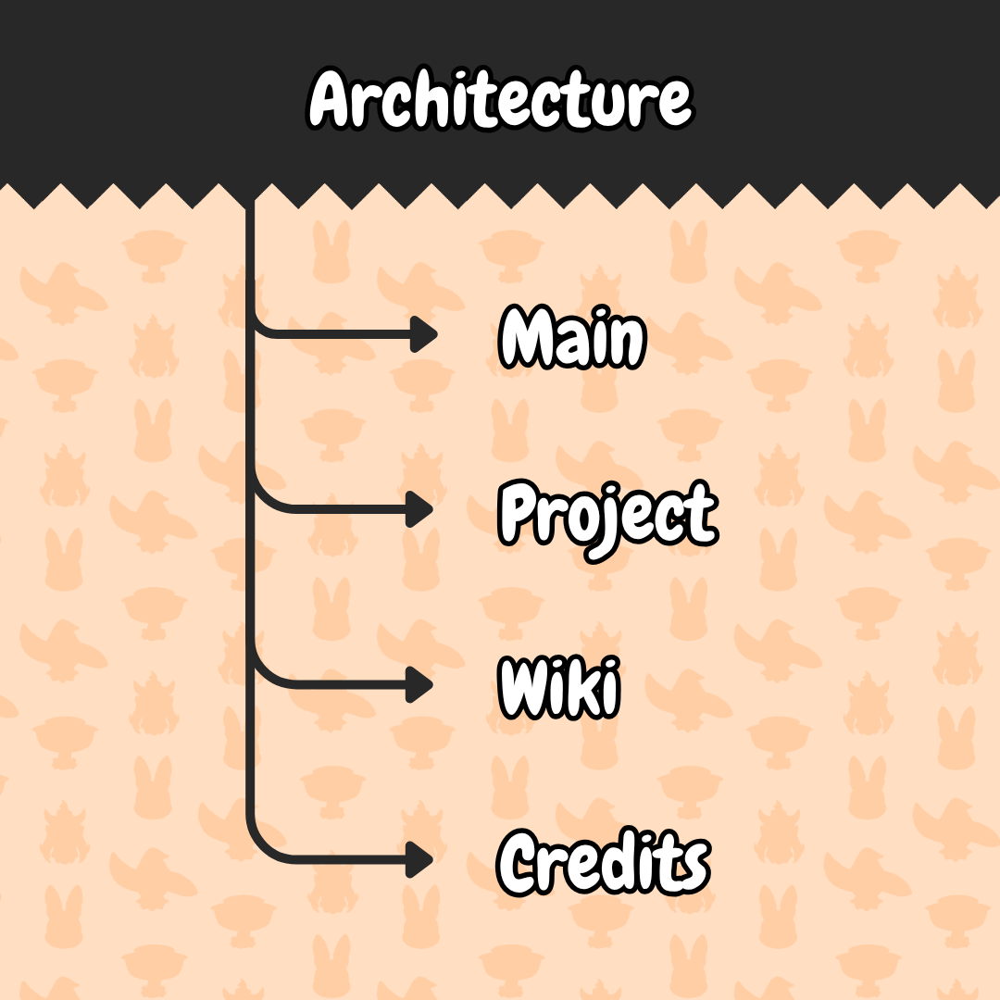
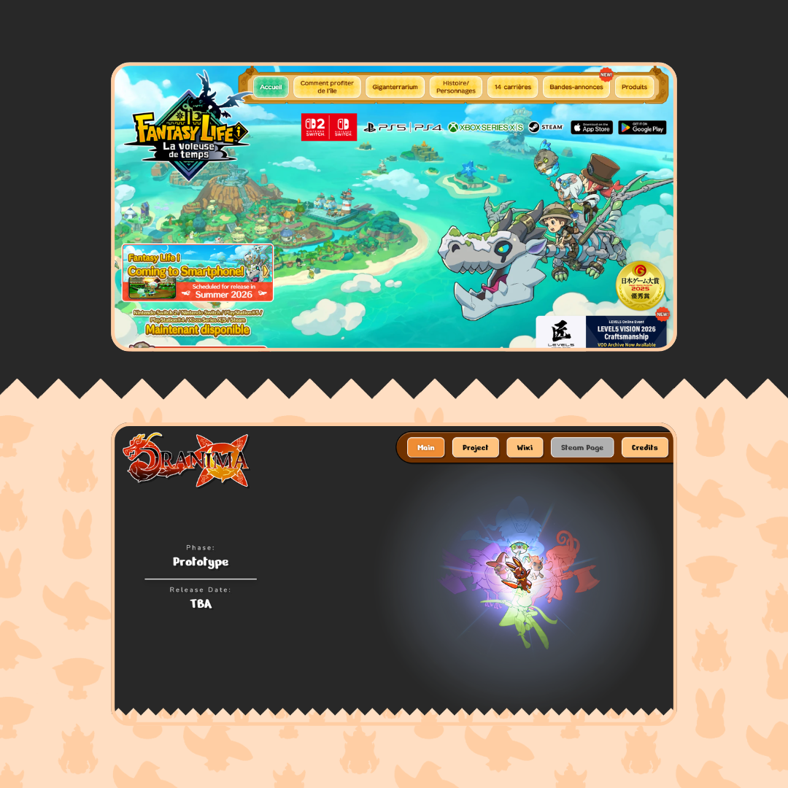
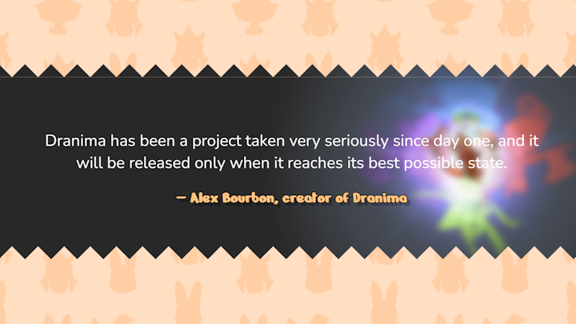

Dranima is an independent monster-tamer RPG in development by Alex Claude Bourbon, drawing on classic JRPGs
from the late 90s and early 2000s. 200 original creatures, a full three-part narrative, a turn-based battle
system in progress. Alex needed a site to introduce the project to new audiences and build a wiki foundation
for future players to grow into.
The design reference was the Fantasy Life i official site:
approachable, media-rich, built around discovery rather than pressure.
A game website has one job: make someone who knew nothing about the project want to know everything about it.
Dranima is in prototype phase. The overworld is still under construction, the battle system is
roughly halfway there. But the universe is already vast: 200 Dranimae designed, the main storyline
nearly complete, 50 side quests written, 60 to 70 contributors involved.
Too little on the
site and it reads as vaporware. Too much and it overpromises. The site had to thread that line:
show the world, explain the mechanics, communicate serious intent, without pretending the game
is done.

The site runs in two layers. The overview is the public entry point: hero, game summary, sections
on the world, creatures, battle system, exploration, and roadmap. Each section is written for a
first-time visitor who needs context before they can care.
The wiki layer sits beneath,
built to grow alongside the game: Dranimae entries, lore articles, mechanic breakdowns.
Structured so Alex can expand it without rebuilding. The architecture anticipates Alpha and
beyond.

The reference was Fantasy Life i: approachable, media-rich, no marketing pressure. The visual
language follows the same philosophy: generous spacing, clear hierarchy, gameplay screenshots
and creature artwork as the primary content.
Contemporary and clean, letting the
game’s nostalgic DNA come through the content rather than the interface.

Rather than hiding the prototype status, the roadmap section lays it out transparently: progress
percentages, what is complete, what is in progress, what the path to Alpha looks like. Honest
communication about an unfinished game builds more trust than false confidence.
The tone
matches Alex’s own framing: a project taken seriously since day one, released only when it
reaches its best possible state.

The game isn’t done. The world is. The site’s job was to show the difference.
A two-layer site for an independent game in active development: a public overview to convert curious
visitors into followers, and a wiki foundation ready to scale toward Alpha. Built to match the scope and
seriousness of the project without overpromising on what doesn’t exist yet.
Designing for a
game in development is a different brief than designing for a shipped product. The challenge isn’t
showing what the game is. It’s making someone believe in what it will be.